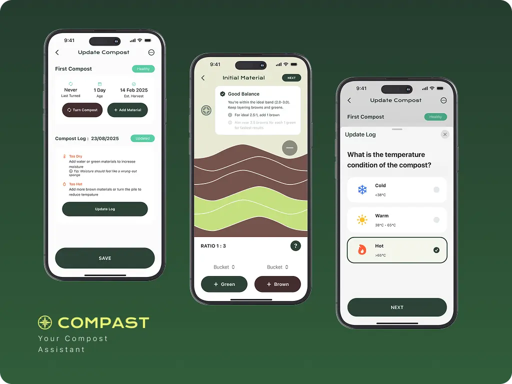

Composting sounds simple. In reality, most households don’t know where to start.
In Bali, organic waste makes up the majority of landfill volume. Yet many households hesitate to compost because they fear doing it wrong. Compast was designed to turn uncertainty into guided action.
Context
Organic waste is not a technical problem. It is a behavioral one.
Through conversations with local communities and environmental initiatives, it became clear that people are not unwilling to compost, they are unsure. Composting is often perceived as messy, complicated, and easy to fail.
The gap is not awareness.
The gap is confidence.
Compast began with a simple question:
How might we make composting feel guided rather than risky?
From Observation to Understanding

To understand the hesitation around composting, I conducted interviews with beginners and observed local compost communities. I focused on people who had either failed before or had never tried at all.
A consistent pattern emerged.
Most beginners rely on guesswork. They check the smell, the color, or follow fragmented advice from the internet. When something goes wrong in the first few weeks, they assume they are doing it incorrectly and stop entirely.
Another key issue was language. Information around composting often uses technical terminology, temperature ranges, carbon-nitrogen ratios, moisture percentages, which overwhelms first-time users.
The problem was not a lack of information.
It was a lack of clarity.
Defining the Design Direction

Based on these insights, the design direction focused on reducing uncertainty at every stage.
Instead of building a compost “tracker,” I designed Compast as a guided assistant.
The core principle was simple:
Users should always know three things:
- What stage they are in
- Whether their compost is healthy
- What action to take next
This shifted the product from being informational to being actionable.
Iteration, Making the System Understandable

Early explorations attempted to present all compost data in a single dashboard. While this looked comprehensive, user feedback revealed that it felt overwhelming. Too much information at once increased hesitation rather than
reducing it.
In the next iteration, the experience was restructured around compost phases. Instead of asking users to interpret raw data, the interface translated conditions into simple states such as “Good,” “Needs Attention,” or
“Adjust.”
This structural shift became a turning point. By reducing cognitive load and clarifying action, the product began to feel supportive rather than instructional.
The wireframes were not about screen quantity.
They were about refining clarity.
The Final Solution

Compast guides users from their first compost setup to harvest through a structured, condition‑based workflow.
Each compost project begins with a simple setup: selecting a method and adding materials. From there, the system monitors progress through visual indicators that translate temperature and condition data into understandable
feedback.
Rather than relying on fixed‑date reminders, notifications are aligned with compost stages. This ensures that users receive prompts when action is relevant, not arbitrary.
Progress tracking reinforces motivation by making invisible processes visible. Composting, which typically feels slow and uncertain, becomes something measurable and reassuring.
The goal was not to make composting sophisticated.
It was to make it feel safe to try.
Design System

Because composting involves multiple condition states, the interface required a clear and consistent visual language.
A modular component system was developed to manage status indicators, alerts, and progress states. Color usage was intentionally restrained and tied directly to condition feedback to prevent ambiguity.
This system not only improved internal consistency but also simplified developer collaboration by defining clear state logic across the product.
Validation & Impact
In early usability testing sessions, participants reported increased confidence in starting composting compared to their previous attempts.
Several users specifically highlighted the condition indicators as the most reassuring feature, as it reduced reliance on guesswork.
While the product is still in its early stage, initial validation suggests that clarity and guided structure significantly reduce beginner anxiety.
Reflection
Compast reinforced an important lesson: behavior change does not require more information. It requires better framing.
If developed further, I would explore integrating real-time sensor input to enhance condition accuracy, as well as lightweight community features to support long-term engagement.
More importantly, this project strengthened my belief that thoughtful UX is less about adding features and more about removing uncertainty.
Nothing great is ever done alone
This project came to life thanks to:
Designer: Hendy (UI), Saskia (UI, Illustration & Design Research), Olaff (Design Research)
Coder: Wikan & Reva (Code), Olaff (Code)
PM: Wikan